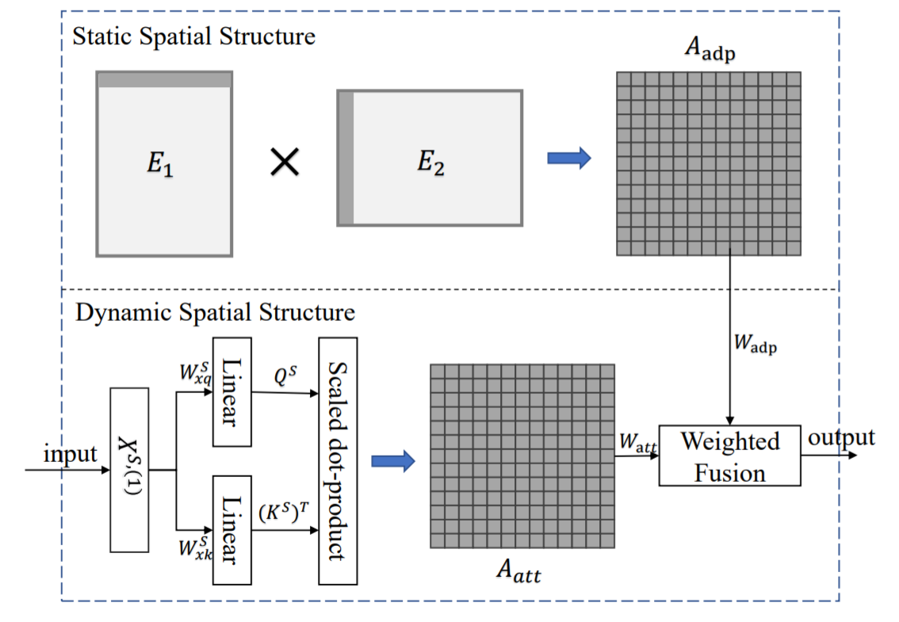
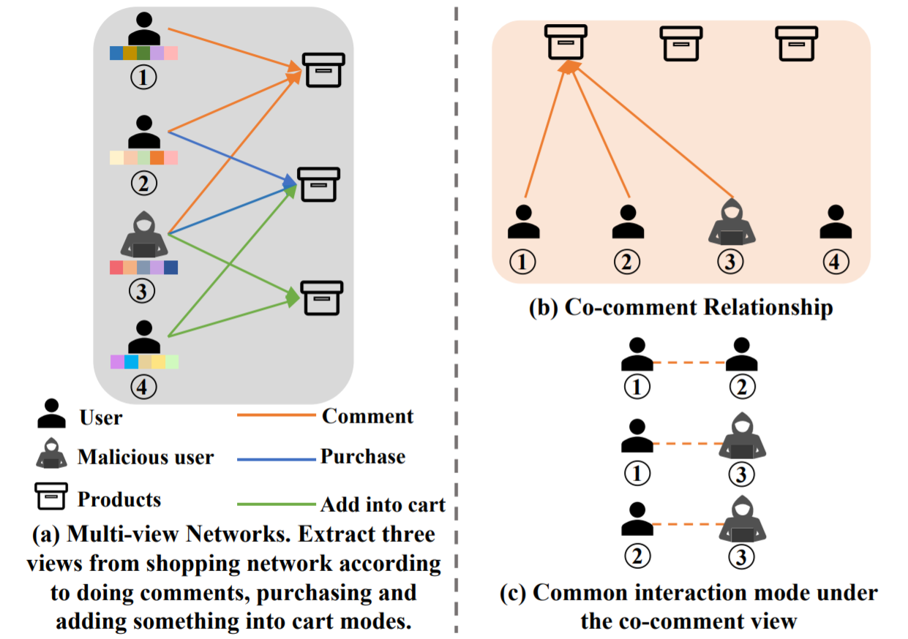

|
|
Shenzhen International Graduate School, Tsinghua University, Shenzhen, P.R. China
Ph. D. Student, from Sep. 2022
Majored in Computer Science and Technology, supervised by Prof. Harry Shum.
|
|
|
School of Computer Science and Technology, Xidian University, Xi'an, P.R. China
B. Eng., from Sep. 2018 to June 2022
Majored in Software Engineering. Rank: 1/398 (less than 1%); GPA: 3.9/4.0.
|
|
Awards
- June 2022, Outstanding Graduate Scholarship (the ONLY student in the S.E. department of XDU).
- Dec. 2021, Principal Scholarship
(Only FIVE students in Xidian University) & Fisrt-class CASC Scholarship
(the ONLY student in Xidian University).
- 2020 ~ 2021, 2019 ~ 2020, 2018 ~ 2019, National Scholarship(<1%), School-level outstanding student
model(<1%). (For three years in my undergraduate life!)
- Sep. 2020, The National College Student Mathematical Modeling Competition (National
level), First Prize(<0.7%) [details].
- Apr. 2021, MCM/ICM, Meritorious Winner.
- Apr. 2020, MCM/ICM, Honorable Mention.
- Sep. 2019, The National College Student Mathematical Modeling Competition (Shaanxi Division),
First Prize.
- Sep. 2019, The 12th College Student Mathematics Competition in Shaanxi Province, First
Prize.
- Oct. 2020, The 12th National College Student Mathematics Competition, Second
Prize.
- Oct. 2019, The 11th National College Student Mathematics Competition, Second
Prize.
|
|
My Research Interests
My research interests: Graph Representation Learning, Anomaly Detection, Computer Vision (Talking Face Generation), Disentanglement, Digital Man.
I also follow other research topics: Optimization Algorithm, Trustworthy Machine Learning, Domain Generalization, Out of Distribution Generalization, and The First Principle of Deep Neural Networks.
|
The full list of publications can be obtained via My Google Scholar.
|

|
DetectorNet: Transformer-enhanced Spatial Temporal Graph Neural Network for Traffic Prediction.
He Li, Shiyu Zhang, Xuejiao Li, Hongjie Huang, Liangcai Su, Duo Jin, Linghao CHEN, Jianbin Huang and Jaesoo Yoo.
In International Conference on Advances in Geographic Information Systems (ACM SIGSPATIAL) 2021.
|
|

|
AnomMAN: Detect Anomaly on Multi-view Attributed Networks.
Ling-Hao CHEN, He Li and Wenhao Yang.
Arxiv Preprint 2022.
|
|
|
I has been the chairman of the Inspur Student Club (ISC) [HomePage]
of Xidian University from Sep. 2020 to Sep. 2021. I was also mainly responsible for the Machine Learning and Data Mining
Group in the club.
|
- June 2022. I defended my thesis "Audio-driven Talking Head Reenactment Algorithm" successfully, and the thesis was selected as the OUTSTANDING thesis of XDU.
- Jan. 2022. A research talk at IDEA related to Audio-driven Talking Face Generation [slides].
- Dec. 2021. I was awarded the Principal Scholarship (only FIVE students in Xidian University).
- Dec. 2021. I was awarded the Fisrt-class CASC Scholarship of China Aerospace Science and Technology Corporation (the ONLY student in Xidian University).
- Sep. 2021. I was awarded the National Scholarship 2020-2021.
- Aug. 2021. One paper "DetectorNet: Transformer-enhanced Spatial Temporal Graph Neural Network for Traffic Prediction" is accepted by International Conference on Advances in Geographic Information Systems (ACM SIGSPATIAL) 2021.
- July 2021. A College Student Innovation and Entrepreneurship Training Program (National level) is qualified. Thanks our advisor Hong Han, group Leader Zhendong Jin and our collaborators.
- W.H. Yang, Ph. D. student of LAMDA@NJU, focus on Machine Learning (especially Online Learning) and Computer Vision.
- Y.R. Pang, Master student of TANKLAB@TJU, focus on Operating Systems and Computer Network.
- X.Y. Sun (Sund), Master student of XJTU, focus on Air-gapped Attack, Covert Communication and Wireless Sensing.
- B.Y. Sun (BB Chan), Master student of NKU, focus on Computer Vision.
- M. Chen, Master student of ShanghaiTech, focus on Artificial Intelligence and Reinforcement Learning.
- C.Z. Ran, Master student of XDU, focus on Artificial Intelligence and Computer Vision.
- D.C. Chen (RainCurtain), Upcoming Ph. D. student of CUHK, focus on Database System, chair of ISC@XDU.
- Y.J. Zhang (YjmStr), Undergraduate of XDU, focus on Algorithm Analysis and Design, mentor of ACM group in ISC@XDU.
- Y.L. Feng, Undergraduate of XDU, focus on Web development and Big Data.
- Y.K. Xu (Viking), Undergraduate of XDU, focus on Computer Security, mentor of CTF group in ISC@XDU.
|

{kind=link}